Նկարներ
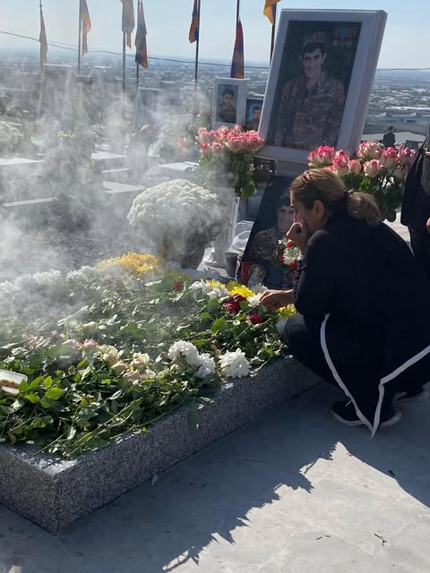
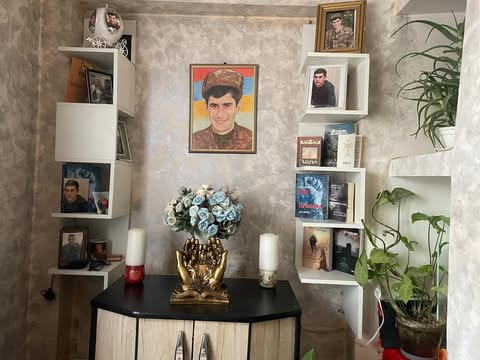
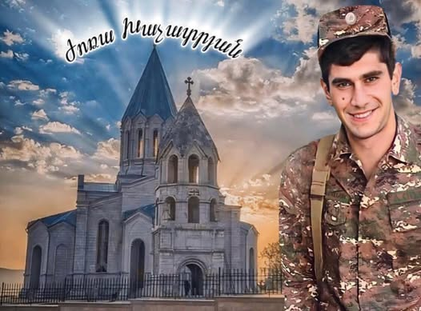
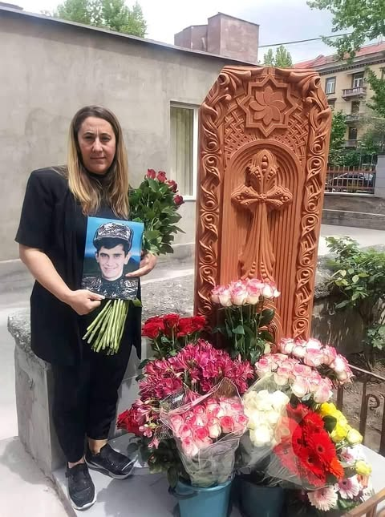
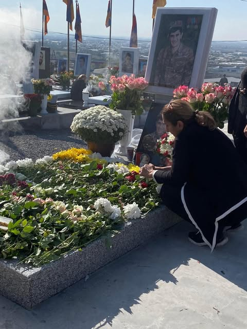
 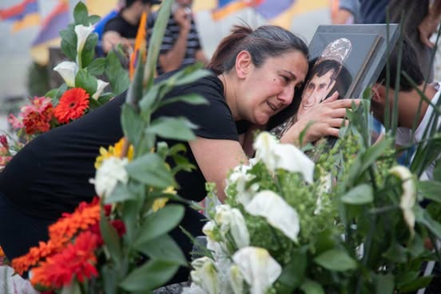
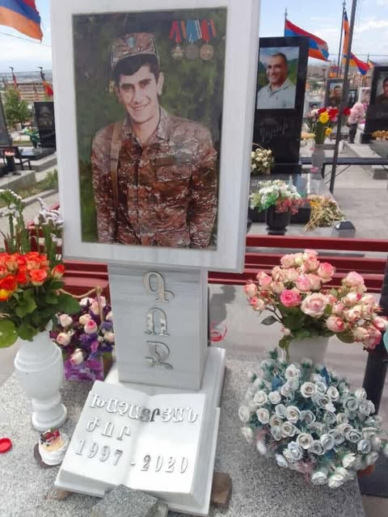
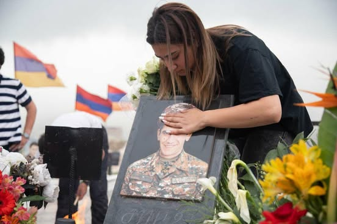
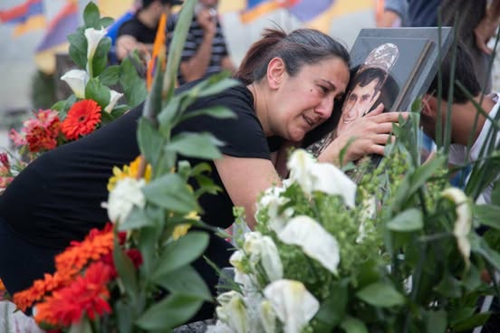
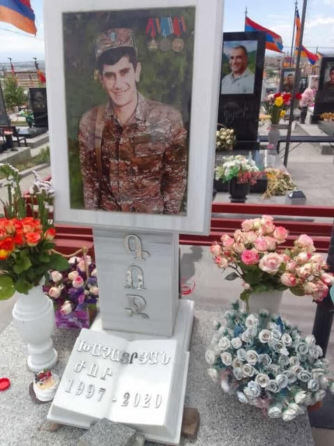
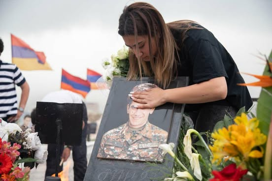
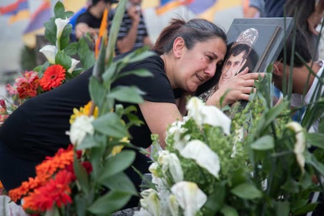
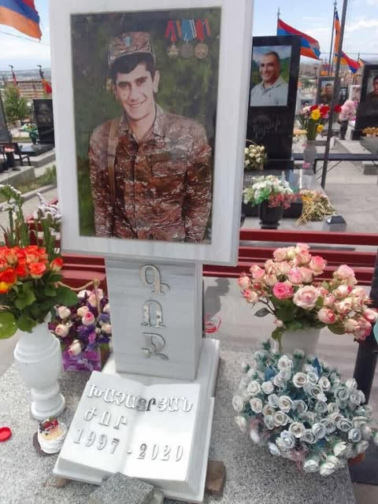
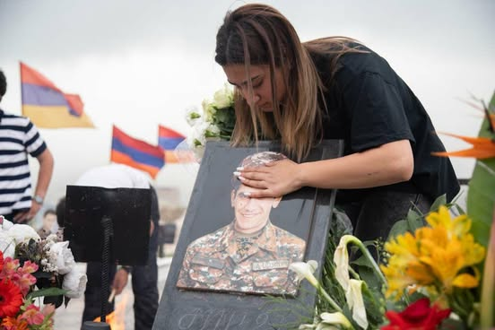
Խոնարհվում ենք,
հավերժի մարտիկ 🙏
Ծնվել Է 1997թ-ի Մայիսի 22-ին մայրաքաղաք Երեվանում, Խաչատրյանների ընտանիքում։ Ուսումն ստացել է Պարույր Սեվակի անվան թիվ 123 միջնակարգ դպրոցում :
2014-2015թթ սովորել է Երեվանի թիվ 119 ավագ դպրոցում: Երկու դպրոցներում էլ թե՛ ուսուցիչների ,և թե՛ աշակերտների կողմից շատ սիրված է եղել: Ընկերները , շրջապատն ու բարեկամները շատ էին սիրում Ժորային ։Յուրահատուկ բնավորության տեր տեղ էր՝։ Որտեղ Ժորան էր այնտեղ ուրեմն կար ժպիտներ ու հումոր։
Դպրոցն ավարտելուց հետո պիտի զորակոչվեր Հայոց բանակ, սակայն դժբախտ դեպքի պատահարի հետևանքի պատճառով խնդիրներ ուներ՝ նստատեղի երկու ոսկորի կոտրվածք: Երկու տարի հետաձգվեց ծառայությունը: երկու տարի անց 2018 թվականին զորակոչվեց ու մենկեց ծառայության ՝ Եղնիկներ :
Զորամասում էլ շատ լավ ծառայել է : 2020 թվականի հունվարին զորացրվեց ։ :Տուն վերադառնալուց հետո անցավ աշխատանքի գազալցակայանում: Երբ սկսեց պատերազմը նա ամեն ինչ անտեսելով կամավորագրվեց , հատուկ ջոկատայինների խմբով մեկնեց ռազմի դաշտ : Մասնակցել է Հադրութի , Ջրականի , Սանասարի եվ Քարին տակի մարտերին :
Զոհվել է Հոկտեմբերի 30 ին Քարինտակի մարտերի ժամանակ:
ԺՈՐԱ _ԼԵՆԴՐՈՒՇԻ_ԽԱՉԱՏՐՅԱՆ հուղարկավորել են ԵՌԱԲԼՈՒՐ պանթեոնում։
ԺՈՐԱ ԼԵՆԴՐՈՒՇԻ ԽԱՉԱՏՐՅԱՆը 1 պարգևատրվել է Հայաստանի Հանրապետության նախագահի կողմից «ՄԱՐՏԱԿԱՆ ԾԱՌԱՅՈՒԹՅԱՆ» շքանշանով։
3 պարգևատրվել է «ՔԱՋԱՐԻ ՄԱՐՏԻԿ» շքանշանով։ 4 պարգևատրվել է գերազանց «ԴԻՊՈՒԿԱՀԱՐԻ » շքանշանով...
Մեր խաղաղ օրերի համար շնորհակալ ենք ԺՈՐԱՅԻՆ🙏... Խոնարհվում ենք, հավերժի մարտիկ 🙏 Ների՜ր ...🙏 Հավերժ փա՛ռք ու խոնարհում Քո վառ հիշատակին🙏🇦🇲 Փառք ու պատիվ Քեզ, մեր ԺՈՐԱ , մեր անմահ հերոս։🦅
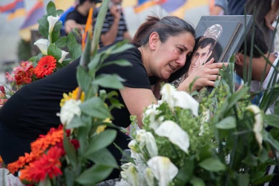
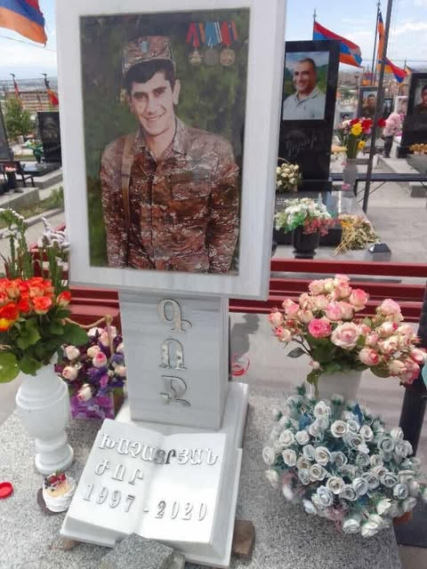
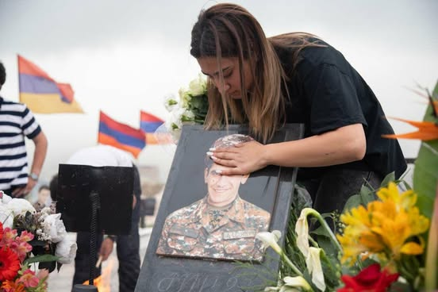